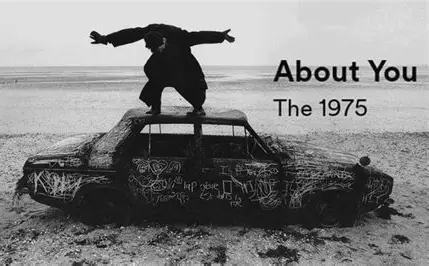
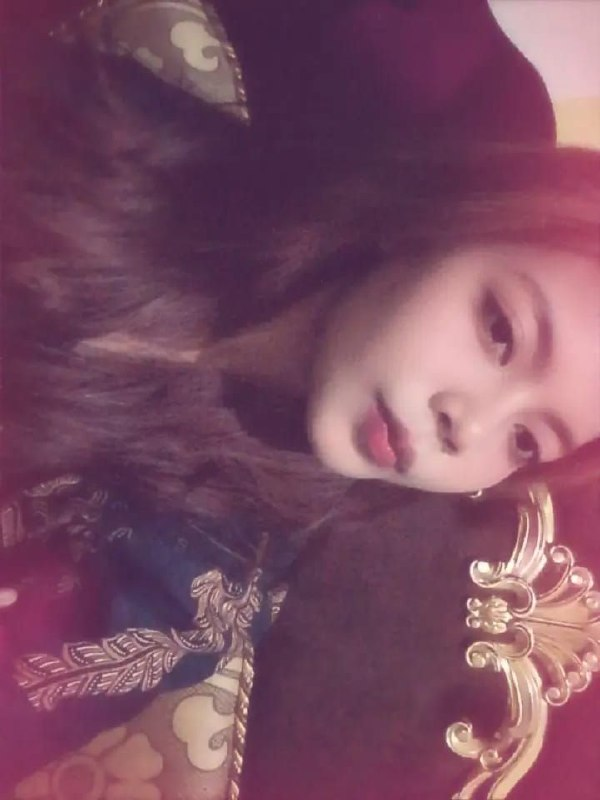

Bunga Cantik Untukmu 🌸
Bunga ini melambangkan indahnya senyum kamu hari ini.

Klik amplop di bawah untuk membukanya yaa...
Bunga ini melambangkan indahnya senyum kamu hari ini.
Dengarkan lagu ini sebentar ya sambil baca slide selanjutnya...

The 1975
Momen manis yang selalu bikin senyum-senyum sendiri kalau diingat.

Makasih udah membuka ini jika harimu terasa sulit ingat selalu ada aku disini see you again! ILOVEUMORE MY FRIST IMPRESION!
Hai kamu! ❤️
Surat ini khusus aku buat untukmu. Cuma mau bilang makasih ya sudah bertahan dari hari yang melehkan dari capenya bekerja, jika kamu butuh tempat cerita selalu ingat ada aku disini yang siap mendengar cerita kamu, semangat buat kamu yaa menjalanin hari selanjutnya, kalau ada apa apa bisa langsung ngomong ke aku aja pasti aku balesin💖,iloveu more dari mantan kamu hehehe.
Tetap jadi dirimu yang manis dan hangat yaa! ✨